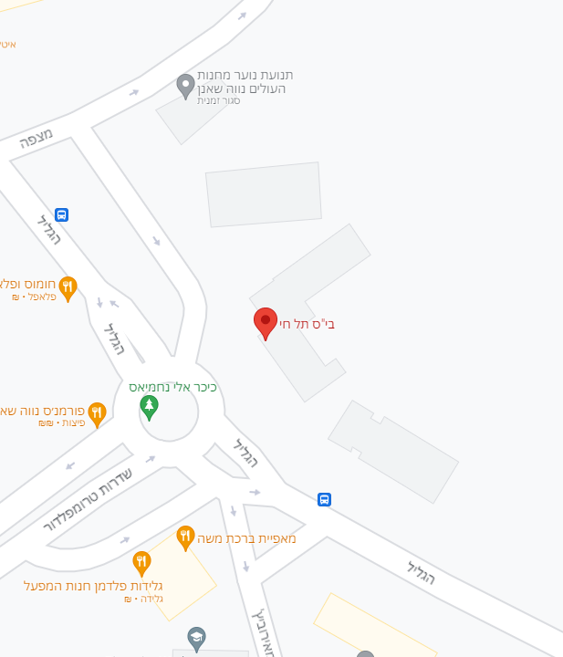

בית ספר תל חי
הסליקים בבית הספר "תל-חי" בחיפה הם שני סליקים שבנה ארגון ההגנה בחדר האוכל של בית הספר "תל חי" שבשכונת נווה שאנן בחיפה. הסליקים היו בשימוש לפני ובמהלך מלחמת העצמאות ונשכחו אחריה, ונחשפו רק 40 שנה לאחר הקמת המדינה. בימינו משמשים הסליקים כמוזיאון המשמר פריטים שנמצאו בהם וכן ממצאים מהתקופה בה נעשה שימוש בסליק.